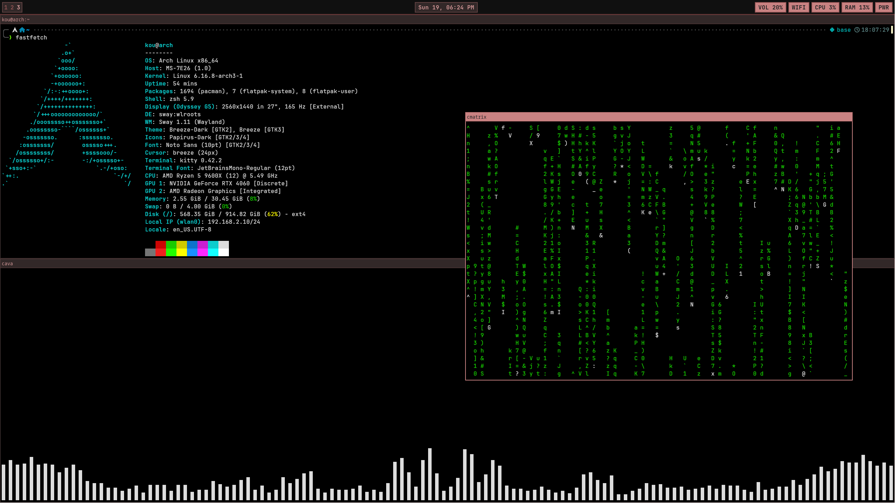
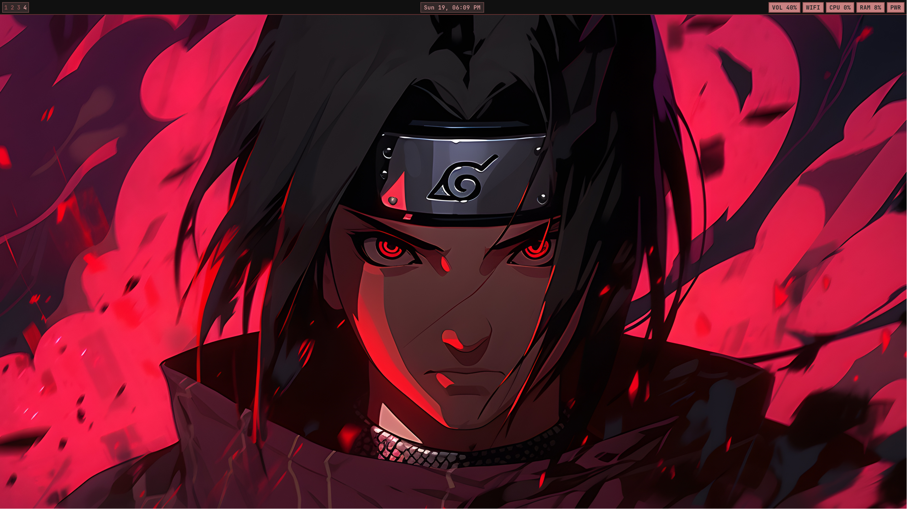

My Dotfiles
A collection of configuration files (dotfiles) for various tools and environments.
Sway config
My customized Sway configuration file, including keybindings, workspace settings, and appearance tweaks.
Download Sway config

Waybar
My customized Waybar configuration file, including module settings, appearance tweaks, and keybindings.
Download Waybar config

More to come...